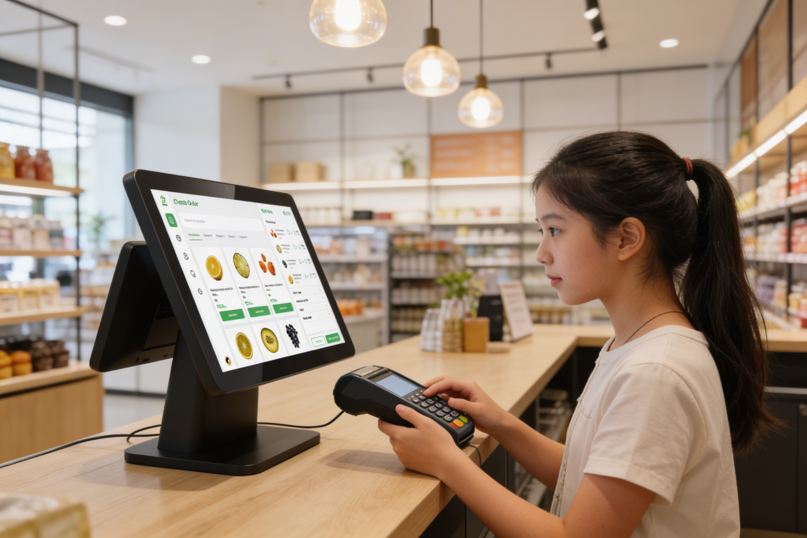
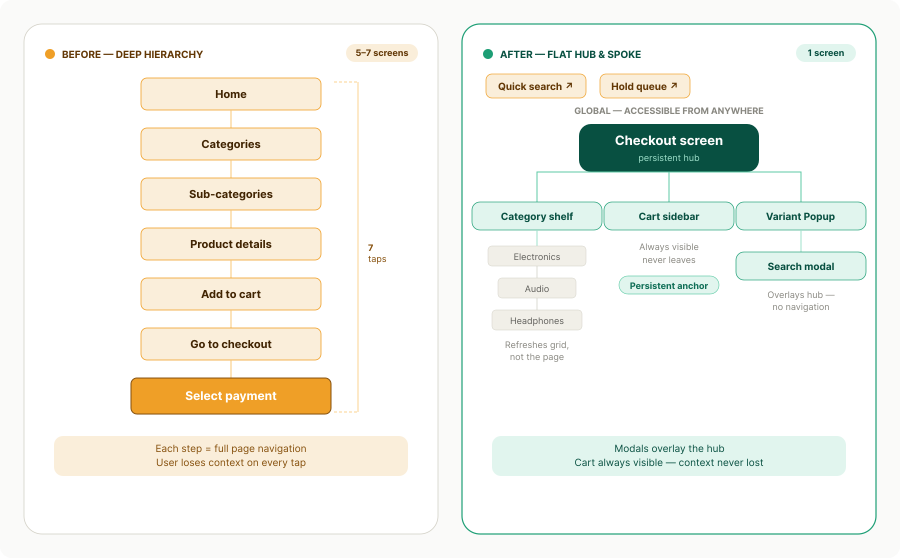
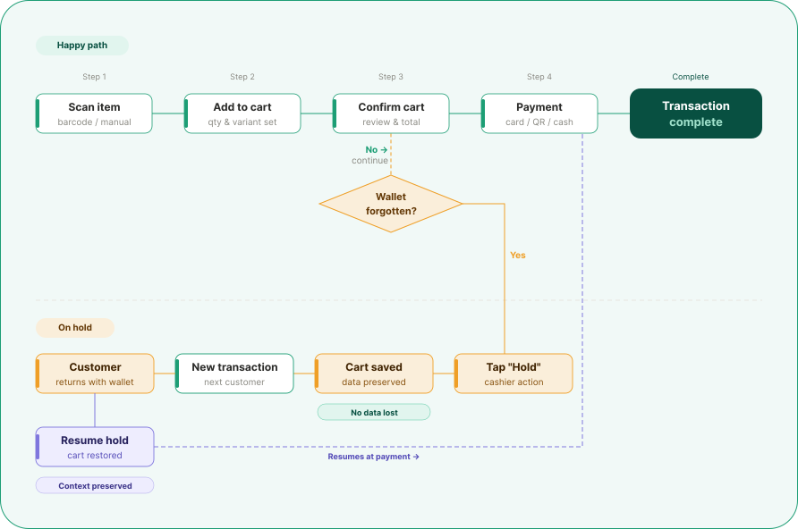
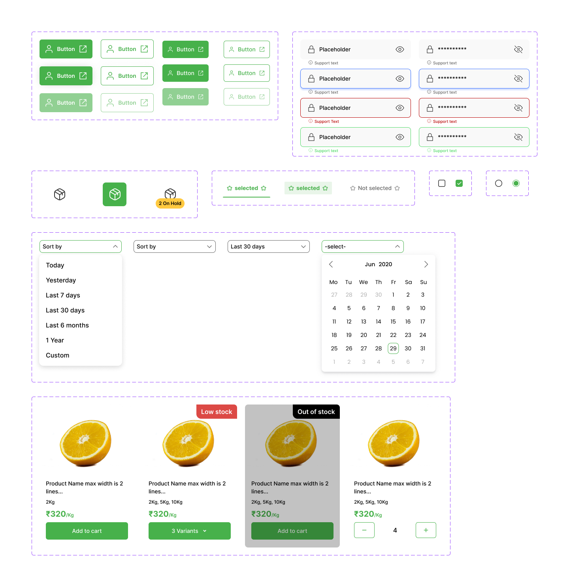
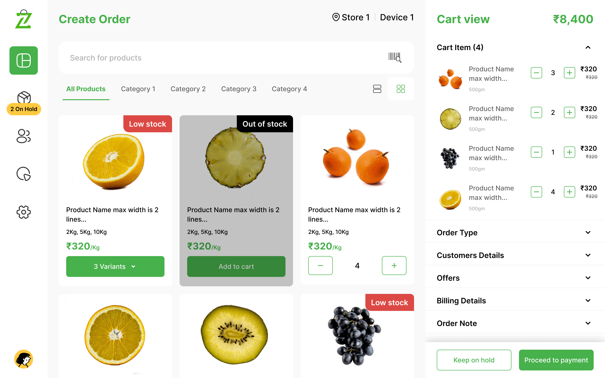
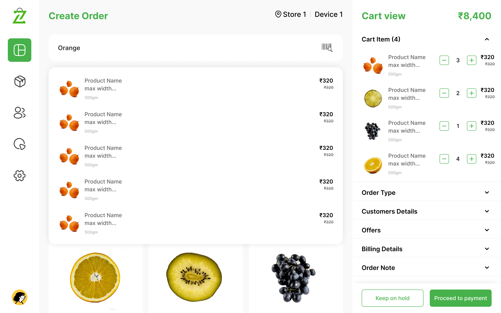
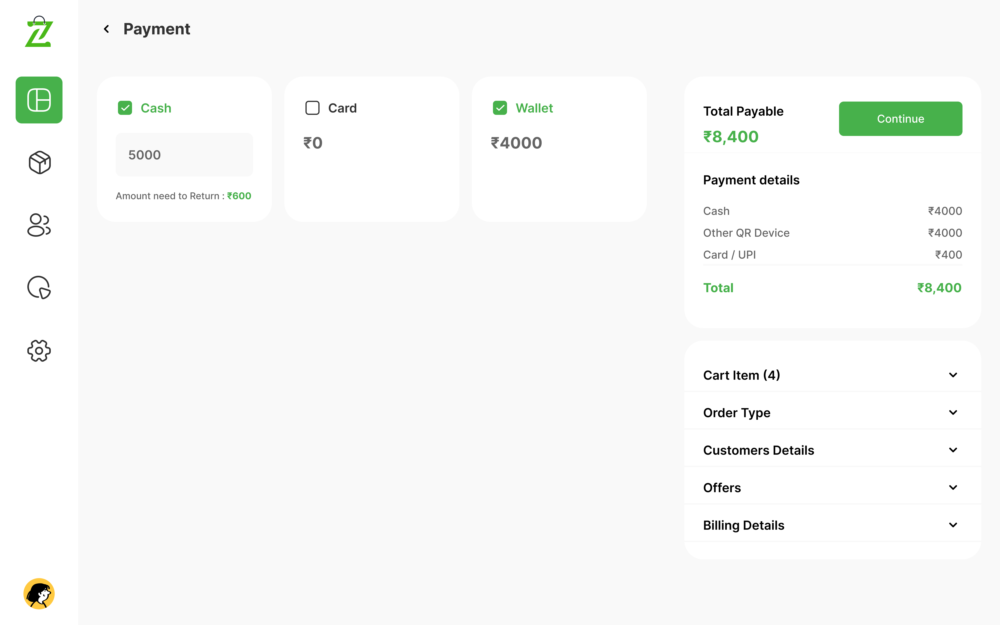
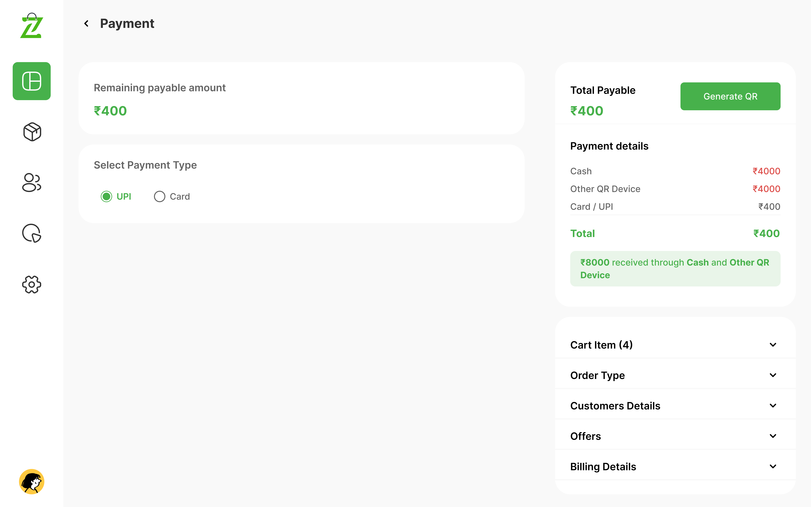
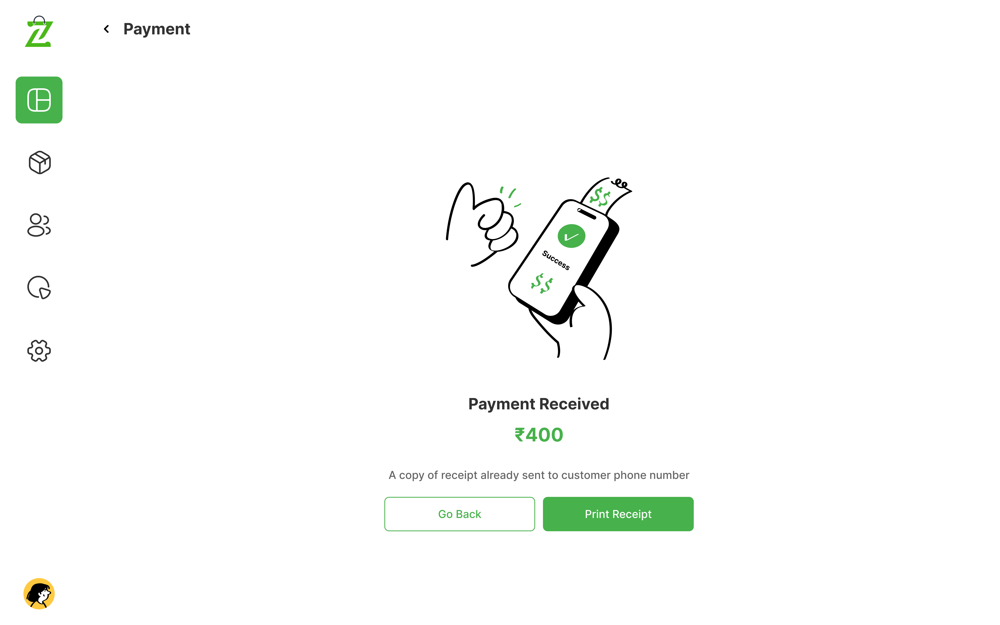

POS Device
Prioritizing the human experience over products to create a more meaningful and supportive retail environment for both the customers and the staff.

Role
Product Design
Timeline
April 2025
Tools
Figma, Whimsical, Notion
Platform
POS Terminal
My Contribution
Roles & Responsibilities
As the Product Designer for this initiative, my primary responsibility was to bridge the gap between complex retail Point of Sale (POS) requirements and user-centric design. This involved conducting secondary research to map out operational pain points and performing a competitive analysis to understand existing systems. I was responsible for designing a scalable navigation system and crafting a high-performance UI capable of withstanding the high-pressure environment of a busy retail floor.
The Problem
Existing Problem
The existing point-of-sale interface had been designed for legacy hardware and carried years of bolt-on features without a foundational rethink. Cashiers were navigating 5–7 screens per transaction — selecting items, applying discounts, handling split payments, and printing receipts — all under time pressure with a queue behind them.
The business goal was to transform the checkout into a seamless and intuitive experience that prioritizes speed and operational flexibility. To achieve this, the system was reimagined with an easy checkout process that includes the ability to hold pending payments to keep the queue moving, alongside an integrated flow for capturing customer details for advanced ordering, all designed to be implemented without requiring retraining of the existing workforce.
Empathize
Understanding the Retail Chaos
To understand the user, we looked at two primary personas: The Cashier (needs speed and error prevention) and The Store Manager (needs oversight and inventory control).
Key User Pain Points identified:
- Decision Fatigue: Too many steps to complete a simple sale.
- System Anxiety: Fear of the system "hanging" or losing data during peak hours.
- Inventory Blindness: Not knowing if an item is in stock until the customer is at the counter.
Define
The Core Challenge
Based on user research, we defined the primary problem statement:
How might we streamline the checkout journey to feel secondary to the human interaction, ensuring complex transactions remain simple, fast, and error-free.
Project Goals:
- Minimize the number of taps from "Item Search" to "Payment Success."
- Create a "fail-safe" environment for order management (Hold/Return flows).
- Ensure 100% visual clarity for stock statuses (Low Stock/Out of Stock).

Ideate
Solving for Speed & Flexibility
During the ideation phase, we mapped out the "Happy Path" for a transaction and then designed for the "Edge Cases."
The "On Hold" Solution
Instead of canceling a transaction when a customer forgets a wallet, we ideated a sidebar "Hold" queue (visible in the 2 On Hold badge in the design).
Visual Cues
We decided to use high-contrast color badges (Red for "Low Stock") to give the cashier instant inventory awareness without needing to click into product details.
The Sliding Cart View
Using a right-side summary allows the cashier to see the "Cart View" and "Billing Details" simultaneously.

Design
High-Fidelity UI Design
I have designed and developed a high-fidelity prototype that emphasizes intuitive interaction patterns and seamless user journeys to ensure a polished, professional experience.
Design System & Visual Language
To ensure the design was scalable and accessible, we built a robust Atomic Design System.
- Increased the size of the "Proceed to Payment" button for easier thumb-tapping on tablets.
- Added clear "Success" and "Failed" icons to account for noisy retail environments where audio cues might be missed.
| Component Category | Element Example | Purpose |
|---|---|---|
| Atoms | Primary Buttons, Stock Badges | Maintain visual consistency across all buttons. |
| Molecules | Product Cards, Search Bars | Grouped elements for repeatable product listings. |
| Organisms | The Cart Sidebar, Payment Modal | Complex UI blocks that handle the "heavy lifting." |

The Transaction Hub
Smart Search & Variant Management
A prominent search bar and category filter (Category 1, 2, etc.) for rapid item discovery. A clean modal for selecting sizes or weights (e.g., 2Kg, 5Kg, 10Kg) that doesn't take the user away from the main screen.


Payment & Success States
Multi-Step Payment Flow
Breaking down "Collection," "Waiting," and "Received" into distinct visual states to prevent double-charging and ensure the cashier knows exactly when a transaction is finalized.



Conclusion
Conclusion & Impact
Smart POS design transforms a complex task into a streamlined visual journey. By following the Design Thinking process, we ensured that the final product isn't just a set of pretty screens, but a functional tool that reduces retail friction.